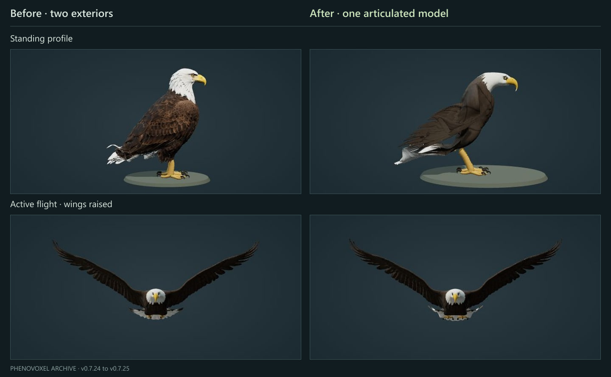
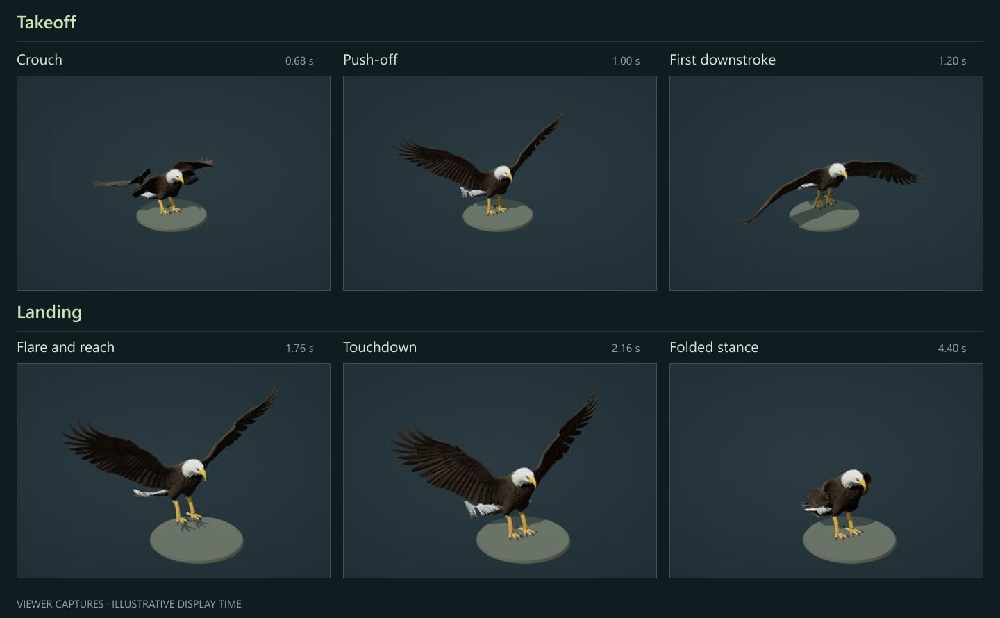

Bald eagle
Haliaeetus leucocephalus · Takeoff and landing · v0.7.25
Open the 3D specimenBefore and after


Evidence for the sequence
- Takeoff. A bald eagle photographed at launch has its wings spread. High-speed imaging and force plates show that starlings and quail use their legs to initiate ground takeoff. In the model, the eagle lowers its hips, raises the wings during leg extension, releases its feet and then uses the first strong downstroke. The toes curl and the feet retract during the climb. USFWS launch photograph · Earls, 2000.
- Landing. A ground landing photographed at Maxwell National Wildlife Refuge shows the bald eagle reaching with both feet. Motion capture of Harris’s hawks documented pitch-up with the wings spread at feet-first perch contact. In the model, the torso pitches up, the tail fans, the feet reach forward, and the legs bend after touching down. The wings fold as the body settles. USFWS landing photograph · Decorah nest camera · KleinHeerenbrink et al., 2022.
- Wing folding. The shoulder, elbow and wrist rotate on one skeleton while a shape correction packs the feathers against the flanks. Pigeon skeletal measurements inform the coordinated elbow and wrist motion. Stowers, Matloff & Lentink, 2017.
The two 4.4-second studies illustrate one takeoff and one bilateral landing on a flat surface. The angles, speeds, contact forces and display timing remain uncalibrated. The separate Fly study retains the 2.53 Hz reference from preliminary field data collected on six bald eagles. Lanzone et al., 2017, conference abstract.
Model and verification
The adult body and its feather maps derive from Pigcraft’s Bald Eagle Flying Bird Model (CC BY 4.0). The PhenoVoxel revision uses that same body, eyes, feet and talons through every pose. Software tests sample both sequences for surface clearance, fixed foot contact before release and after touchdown, and return to the same standing posture.
Evidence and asset checksums · Shared adult GLB · Mesh authoring source · Previous release.